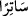
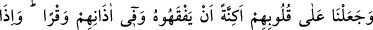
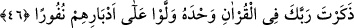

7/204) âyetinde de Kur’ân kelimesi ile hutbe kasdedilmiştir. Dolayısıyla âyetin özel
mânâsına hamledilmesi gerekir. Onlar perdeyi göremezlerse onunla örtüneni de
göremezler. O da onların işkencelerinden kurtulur. Fakat kesin delillerin gösterdiğine
göre durum her zaman böyle olmamıştır.
Müftî Sa‘dî: “Belki de âyetin şu rivâyete hamledilmesi daha uygundur. Rivâyete göre
bu âyet Ebû Süfyân, Nadîr, Ebû Cehl ve Ebû Cehl’in karısı Ümmü Cemîl hakkında nâzil
olmuştur. Bu kimseler Hz. Peygamber (a.s.) Kur’ân okuduğu zaman ona eziyet
veriyorlardı. Allah da Hz. Peygamber (a.s.) Kur’ân okuduğu zaman onların gözlerine
perde çekti. Bundan sonra onun yanından geçiyorlardı, ama onu göremiyorlardı.”
demiştir. Bu görüş, bu âyetten sonraki “Biz, onların seni dinlerken ne maksatla
dinlediklerini biliriz.” (el-İsrâ, 17/47) âyetini dikkate almamak demektir. Nitekim
onunla ilgili rivâyet gelecektir. Bu önemli konuda gönlüme doğan budur.
Âyette Kur’ân’ı hakkıyla okuyan kimselerin kurb (Allah’a yakınlık) derecelerinin en
yükseğine yükseleceğine işâret vardır. Bir hadiste: “Kur’an âyetlerinin sayısı cennet
derecelerinin sayısı kadardır. Kim Kur’ân âyetlerinin tamamını hakkıyla okursa
cennet derecelerinin en üstününe yerleşir.”[98] buyrulmuştur. Kur’ân âyetlerinin
tamamının hakkını vermek aslında Kur’ân ahlâkıyla ahlâklanmaktır. Kur’an, Allah’ın
ahlâkından ve sıfatlarındandır. Kur’ân ahlâkıyla ahlâklanan bir kişi Allah’ın ahlâkıyla
ahlâklanmış olur. Bu ise ancak zulmânî ve nûrânî perdeleri geçtikten, muktedir melik
olan Allah katında gerçek makama eriştikten sonra gerçekleşir. İşte O, onunla âhirete
inanmayanlar arasına gizleyici bir perde yerleştirendir.
Âyette “
sâtiran/örten” buyrulmadı. Çünkü perde (hicâb) vâsıl olanı, yolda
kalandan perdeler. Yolda kalanı vasıl olandan örtüp gizlemez. Böylece vasıl olan,
hicâpla yolda kalandan örtünüp gizlenmiş olur.” Nitekim et-Te’vîlâtü’n-Necmiyye’de
böyle geçmektedir.
Yine burada işâret vardır ki Hak ile korunan en sağlam kalede korunmaktadır.
Allah’ın kitabıyla korunan kimse yine en sağlam kalede korunmaktadır. İlmiyle ve
nefsiyle korunan ise vaktini boşa harcayan kimsedir. Onun helâki güvendiği yerden
olacaktır.
Kim Cenâb-ı Hakk’ın korumasının dışında olursa
Öyle kimsenin canı sonunda cisminden uzak olur
Allah adamı gör nasıl Hak’tan gayrısına dayanır
Çünkü Hak’tan gelen her kazâ kolaydır